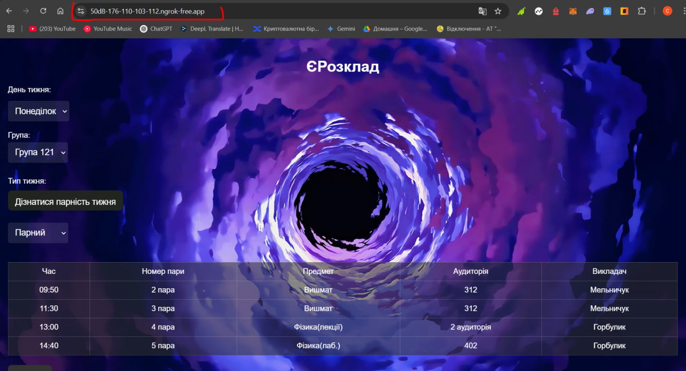
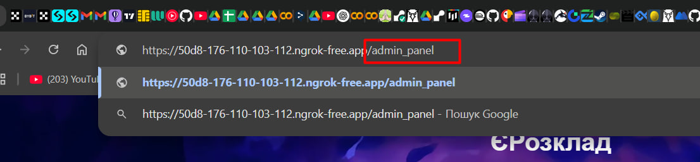

Туторіал
1. Головна сторінка

Ця сторінка є основною та призначена для відображення розкладу у зручному форматі.
2. Перехід на адмін панель
 Для доступу до адміністративної панелі необхідно додати /admin_panel до веб-адреси в браузері.
3. Система авторизації

Доступ до адміністративної панелі можливий лише для авторизованих користувачів. Будь ласка, увійдіть у систему, використовуючи надані вам логін і пароль.
4. Адмін панель

Ця сторінка є адміністративною панеллю, що надає доступ до всіх її функцій та налаштувань системи.
5. Редагування розкладу

У цьому розділі ви можете редагувати наявні записи в розкладі або видаляти їх за необхідності.
Фільтрація записів

Для зручності ви можете відфільтрувати записи, зазначивши потрібний день та ввівши назву групи. Після натискання кнопки "Фільтрувати" система відобразить розклад лише для вибраного дня та дисциплін відповідної групи.
Редагування дня

У цьому випадаючому списку ви маєте можливість змінити день запису, вибравши його з доступних варіантів.
Редагування Часу

В цьому випадаючому списку можливо змінювати час запису
Номер пари автоматично підтягнеться в залежності від обраного часу
Редагування викладача

У цьому випадаючому списку ви можете змінити викладача для запису.
Також передбачено фільтр для зручного пошуку викладача. Якщо необхідного викладача немає у списку, перейдіть до відповідного розділу та додайте його.
Збереження та видалення

Поруч з кожним записом є дві кнопки: "Зберегти" – для збереження внесених змін, та "Видалити" – для видалення запису з розкладу.
6. Додавання нового запису розкладу та викладача

У цьому розділі ви вводите необхідні дані:
Обираєте день запису з випадаючого списку.
Вибираєте тип тижня з відповідного списку.
Вказуєте групу.
Вибираєте час із випадаючого списку (номер пари визначатиметься автоматично).
Вводите номер групи.
Вказуєте аудиторію.
Обираєте викладача з випадаючого списку (також доступний пошуковий фільтр для зручності).
Після заповнення всіх полів натискаєте кнопку "Додати" для збереження запису.
Додавання викладача

У цій формі ви маєте можливість додати нового викладача до системи, заповнивши необхідне поле.
7. Екзамени та залікі

У цьому розділі ви маєте можливість редагувати та додавати інформацію про заліки та екзамени.
Фільтр за групами

У цьому розділі є випадаючий список, що дозволяє відображати записи для конкретної групи. Фільтр працює одночасно для заліків та екзаменів.
Додавання та редагування заліків

Також є форма для додавання нових заліків.
Як і для звичайних записів, ви вводите необхідні дані та натискаєте кнопку "Додати залік" для збереження.
Додавання та редагування екзаменів

Аналогічно, є форма для додавання екзаменів. Ви вводите потрібні дані та натискаєте кнопку "Додати екзамен" для збереження.
8. Редагування перездач

У цьому розділі ви можете редагувати та додавати інформацію про перездачі. Для зручності є фільтрація, яка здійснюється за курсом.
Додавання нових записів перездач

9. Завантаження розкладу

У цьому розділі ви можете обрати потрібні групи для кафедри та завантажити розклад у форматі Excel (xlsx). Це дозволяє зберігати розклад для подальшого використання або обробки.
Пошук групи

У цьому розділі ви можете обрати необхідні групи для кафедри та завантажити розклад у форматі Excel (xlsx).
Для зручності також передбачено функцію пошуку, яка дозволяє швидко знайти потрібні групи.

Так, розклад відображається в Excel (xlsx) у вигляді таблиці, що містить всю необхідну інформацію.
10. Відображення Заліків, Екзаменів та Перездач

У цьому розділі є можливість вмикати або вимикати відображення даних таблиць на головній сторінці, що дозволяє налаштувати видимість інформації залежно від ваших потреб.